AHS
The Almost Hidden Set (AHS) is a subset of the House that is created by restricting the candidate digits and cells.
This is the counterpart constraint to ALS.
(1)AHS
A Locked Set is a state in which "N cells in the same house have N candidate digits",
and it is not possible to determine which cell contains which number, but the set as a whole is in a locked state.
AHS is in an almost Locked state, with "N candidate digits in N+1 cells" belonging to the same house.
When one cell that makes up AHS is removed, it is confirmed and AHS becomes a LockedSet.
The smallest AHS is "2 cells, 1 candidate digit".
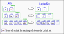
このHPでは、次のように簡略化した AHS表現 も用います。
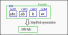
(2) RCC,nRCC
The analysis algorithm using AHS makes use of the common cell and numerical limiting effects of the two AHS.
When two AHS overlap, the cells of the AHS are classified.
The cells in the overlapping area of the AHS are RCC (Restricted Common Cell).
Also, the cells other than the RCC of the AHS are nRCC (no Restricted Common Cell).
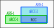
The RCC has multiple cells. Each cell contains candidate digits from two AHSs.
- case-1: 1 cell
initially define the RCC cell for one state.
The candidate digits of two AHSs may be common to both, or unique to each. Therefore, RCC cells will also have combinations of common and unique candidate digits.
RCC-cells are classified as "X" and "Z" as follows:
X The candidate digits of the two AHS are different, or the two AHS have the same candidate digits but the RCC-cells do not have the same candidate digits. Z RCC-cells have a common candidate digit ("Z" if it is not "X").
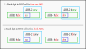
- case-2: 2-3 cells
X and Z are mixed in various ways.
It is these particular combinations that result in an analytical algorithm.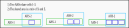
Analysis Algorithm
AHS-XZ is a bit of an oddball among Sudoku algorithms, but the logic is simple.
The GNPX source code is a good reference.
(1) AHS_XZ
AHS_XZ is when the RCC has one or more X and one or more Z.
Exclusion rules :
1) Candidate digits other than AHS in cell Z can be excluded.
- Suppose cell Z becomes invalid.
- One AHS will be in LockedSet and the other AHS will run out of cells.
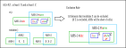
If the Z cell becomes invalid in some way in the RCC (minimum 2 cells), one AHS will become LockedSet and the other AHS will run out of cells. Therefore, candidate numbers other than the AHS of the Z cell can be eliminated.
(2) AHS_XZ_double
AHS-XZ double is when the RCC has 2 or more X.
Exclusion rules :
1) Candidate digits other than AHS in cell Z can be excluded.
- Suppose cell Z becomes invalid.
- One AHS will be in LockedSet and the other AHS will run out of cells.
2) The other AHS candidate digit in the nRCC can be excluded.
- This takes advantage of the fact that there are more than two X's.
- (When RCC has two Xs) In nAHS-1, assume that the candidate AHS-2 is positive.
- This cell is removed and AHS-1 becomes the LockedSet.
- The number of cells in AHS-2 is reduced by 2 (the number of RCC cells).
However, the presence of two Xs does not reduce the number of candidate digits in AHS-2.
- Therefore, AHS-2 becomes "N digits N-1(=N+1-2) cells" and fails.
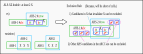
AHS Example
568..4..2 ..9.....1 ...7...98 6...4.2.. ...8.3... ..3.7...5 74...5... 1.....5.. 8..1..734 Puzzle
568914372 .79..8.51 3..75..98 6.75492.3 .5.8.3..7 ..3.71..5 74...5... 13.4.75.. 8951..734 Current
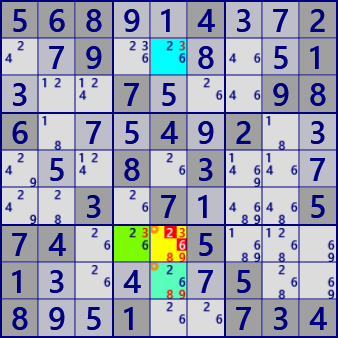
AHS-XZ
AHS1: r278c5 #38
AHS2: r7c45 r8c5 #39
X(RCC): r78c5 X: r8c5 Z: r7c5
r7c5#26 is negative
568..4..2 ..9.....1 ...7...98 6...4.2.. ...8.3... ..3.7...5 74...5... 1.....5.. 8..1..734 Puzzle
568914372 .79..8.51 3..75..98 6.75492.3 .5.8.3..7 ..3.71..5 74...5... 13.4.75.. 8951..734 Current
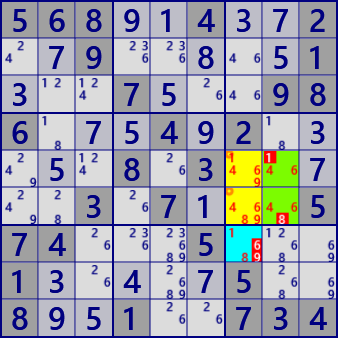
AHS-XZ double
AHS1: r567c7 #18
AHS2: r56c78 #469
X(RCC): r56c7 X: r56c7 Z: r56c7
r5c8#1 r6c8#8 r7c7#69 is negative
6....3.45 81...529. .5.6..... 27....3.. ......... ..1....69 .....2.8. .241...73 16.5....4 Puzzle
697..3.45 813..5296 4526...37 27....3.8 ........2 ..1....69 73...2.81 .241...73 168537924 Current
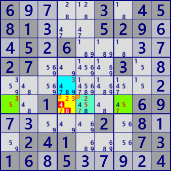
AHS-XZ
AHS1: r5c4 r6c45 #23
AHS2: r6c1457 #357
X(RCC): r6c45 X: r6c5 Z: r6c4
r6c4#48 is negative
7....9.61 45...128. .1.7..... 23....1.. ......... ..5....34 .....7.4. .268...75 57.6....9 Puzzle
783..9.61 459361287 6127....3 237...1.. .41....2. .65....34 398..7642 126894375 5746..819 Current
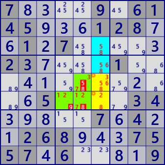
AHS-XZ double
AHS1: r3456c6 #568
AHS2: r5c56 r6c456 #1237
X(RCC): r56c6 X: r56c6 Z: r56c6
r5c5#58 r6c4#9 r6c5#8 is negative